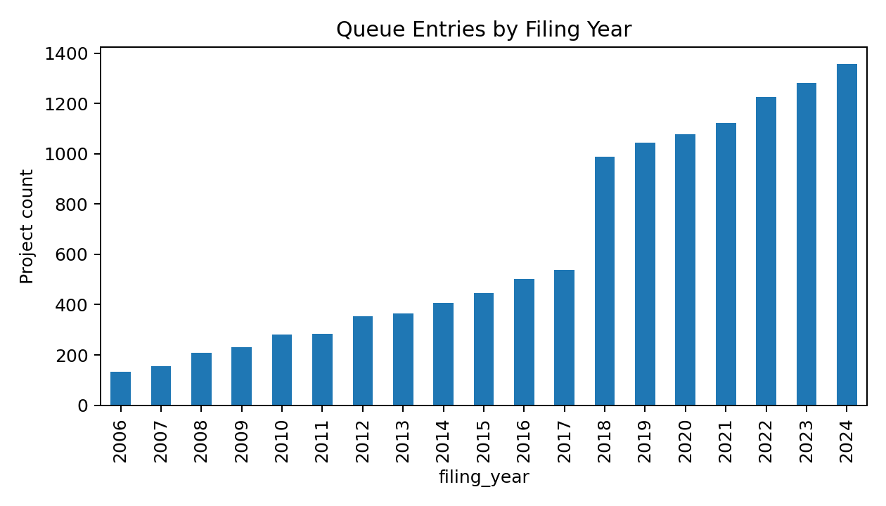
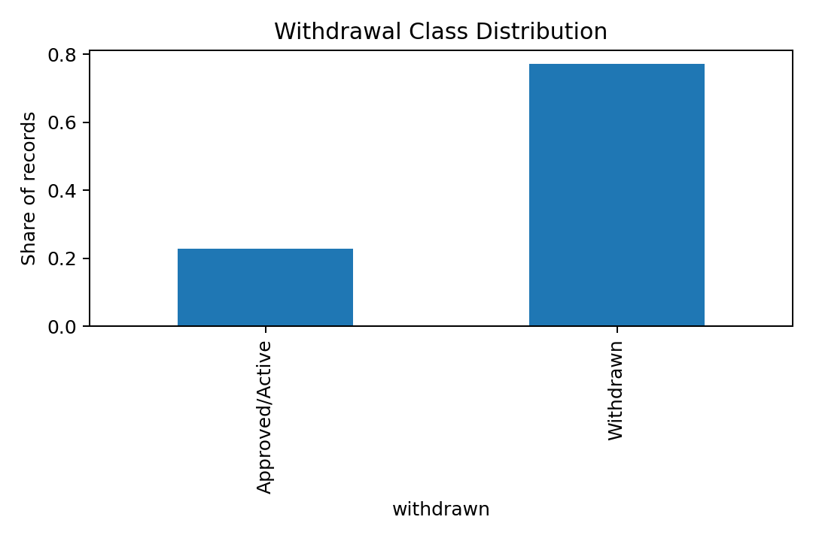
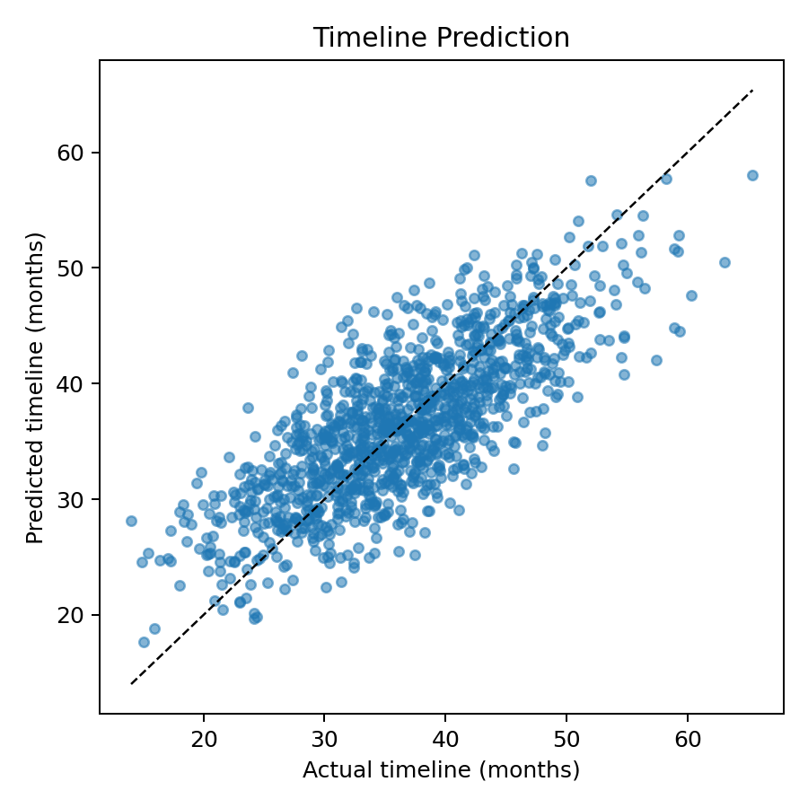
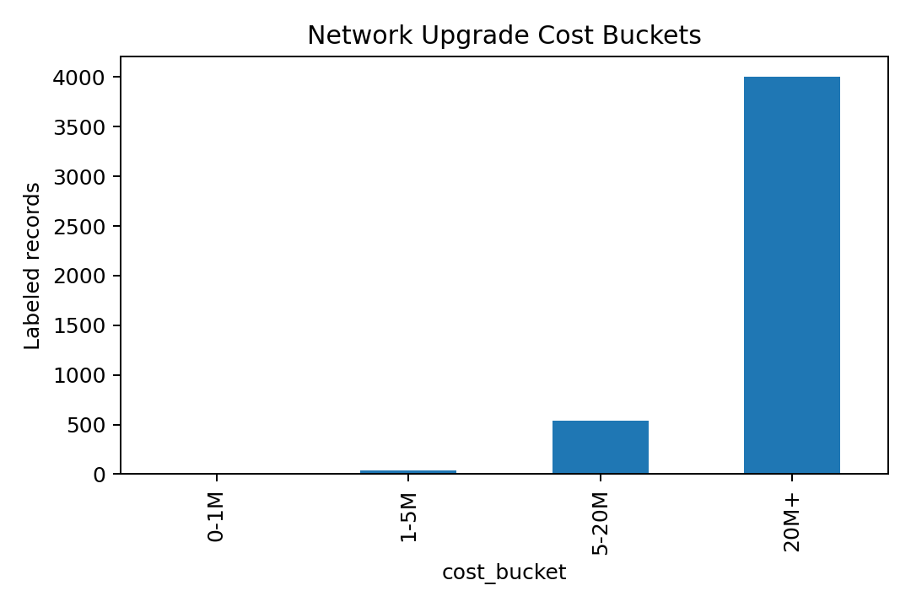
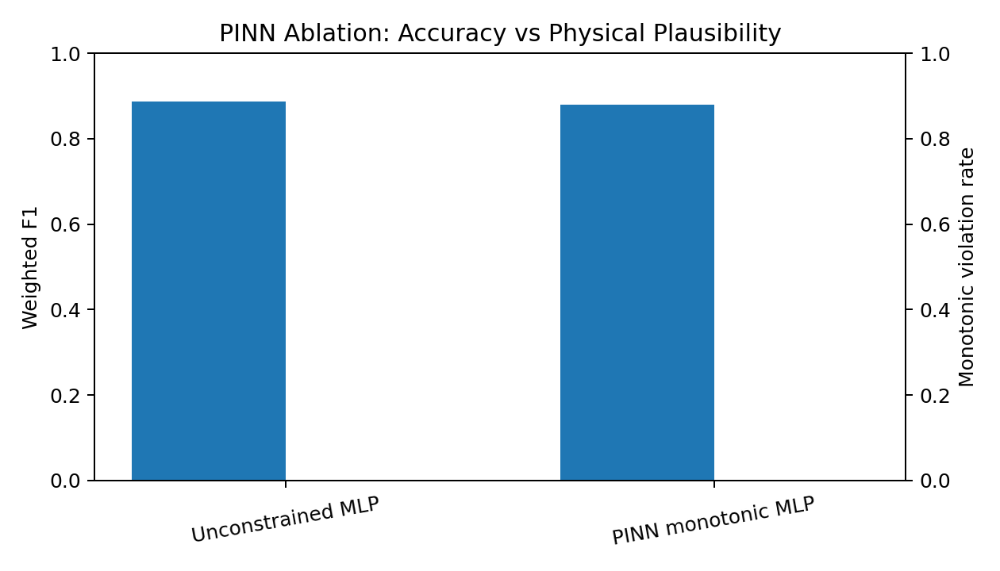

ML Interconnection Queue Intelligence
for the U.S. Electric Grid
Eshana Jain
CEE 498 MLC · Spring 2026
The Interconnection Queue Bottleneck
- Before a power plant can connect to the grid, it must go through an interconnection study — a process run by the regional transmission operator
- Right now there are over 2,300 GW of proposed projects waiting in U.S. queues — most will never get built
- The majority of projects are eventually withdrawn, after developers have already spent significant money on site work, permitting, and study fees
- Developers make irreversible decisions without knowing: will we survive the queue? how expensive will upgrades be? how long will this take?

Queue project volume by filing year (LBNL Queued Up 2025)
What We Want to Predict
Three early-stage predictions that a developer could use before or near the time of filing:
1. Withdrawal Risk
Will this project be withdrawn from the queue?
Binary classification
2. Study Timeline
How many months until the interconnection study completes?
Regression
3. Network Upgrade Cost Bucket
Which cost tier will required grid upgrades fall into?
$0–1M | $1–5M | $5–20M | $20M+

~77% of projects in the dataset are withdrawn — strong class imbalance
Paper: Physics-Informed Neural Networks
Raissi, Perdikaris, and Karniadakis (2019). Journal of Computational Physics.
- The core idea: train a neural network using both a data-fitting loss and a physics residual, evaluated at "collocation points" — locations in input space sampled independently of training labels
- The physics term penalizes the model whenever its output violates a governing equation
- Demonstrated on Burgers' equation, Navier-Stokes, Schrödinger, and Allen-Cahn systems
- Key finding: the physics term improves generalization in sparse-data regions and produces physically plausible outputs
L(θ) = L_data(θ) + λ · L_physics(θ)
L_data — fits the observed labels
L_physics — penalizes PDE residuals at collocation points
Adapting PINNs to Interconnection Data
Public queue data is tabular — there's no PDE to enforce directly. But queue economics are still governed by domain constraints.
Physics prior: holding everything else constant, a larger requested MW capacity should not lead to a lower required network upgrade cost.
L_total = L_cross_entropy + λ · L_monotonic
L_monotonic = mean( max(0, E[cost | x] − E[cost | xhigh_MW]) )
- Collocation copy: each training project gets a twin with MW scaled up 35%, all other features fixed
- The penalty fires if the expected cost bucket decreases when MW increases
- This is exactly the Raissi et al. structure — a data term plus a domain-residual term — applied to a tabular infrastructure setting
Relevant Course Concepts
Supervised Learning
- Binary and multi-class classification (logistic regression, MLP)
- Regression (Ridge, MLP regressor)
- Class imbalance handling via cost-sensitive weighting
Probabilistic Modeling
- Gaussian Process Regression for calibrated 90% prediction intervals on upgrade cost
Neural Networks
- Multi-layer perceptrons with dropout, batch normalization, AdamW
- PyTorch custom training loop for the PINN model
Regularization / Domain-Constrained Learning
- Ridge penalty in linear baselines
- Monotonicity penalty — encoding domain knowledge directly into the loss function
Dataset
- Primary source: LBNL Queued Up 2025 — project-level U.S. interconnection queue records
- Supplemented by ISO/RTO queue exports: MISO, PJM, CAISO
- Pipeline also ships with a synthetic dataset matching the same schema, class imbalance, and feature relationships — so the code runs without external data files
- Cost labels are only available for about 38% of projects — those that progressed far enough in study to receive an upgrade estimate
| Split | Rows |
|---|
| Total | 12,000 |
| Training (80%) | 9,600 |
| Validation (10%) | 1,200 |
| Test (10%) | 1,200 |
| With cost labels | 4,581 (38%) |
| Withdrawal rate | 77.3% |
Stratified by ISO region and filing-year cohort to reduce temporal and regional leakage.
Feature Set
Numeric Features
- log_mw_capacity — log-transformed requested MW (right-skewed)
- filing_year, voltage_kv, queue_position
- substation_congestion_24mo — count of prior projects at the same point of interconnection in the past 2 years
- queue_cohort_size — projects in the same ISO/year cohort
- county_queue_density, distance_to_transmission_miles
- renewable_penetration_pct — regional saturation proxy
Categorical (one-hot encoded)
- iso_region — MISO, PJM, CAISO, ERCOT, SPP, NYISO, ISO-NE
- fuel_type — Solar, Battery, Wind, Hybrid, Gas, etc.
- deliverability_status — Full Capacity / Energy Only / Partial
- interconnection_service — NRIS, ERIS, Capacity Resource, Network Resource
Congestion proxy and cohort size are engineered from raw queue records — not provided directly by the data source.
Tasks and Models
| Task |
Type |
Interpretable Baseline |
Nonlinear Model |
| Withdrawal |
Binary classification |
Logistic Regression (class-weighted) |
MLP Classifier |
| Timeline |
Regression |
Ridge Regression |
MLP Regressor |
| Cost Bucket |
4-class classification |
Unconstrained MLP |
PINN-Monotonic MLP |
| Upgrade Cost (GPR) |
Regression + uncertainty |
Gaussian Process (RBF kernel, log-cost target) |
- Each task has a linear/interpretable baseline paired with a more expressive model
- The cost task is the main PINN ablation: constrained vs. unconstrained MLP
- GPR exists separately to give calibrated uncertainty rather than just point estimates
Model Architecture Details
sklearn MLP (Withdrawal / Timeline)
- Hidden layers: (48, 24)
- L2 regularization: α = 1e-3
- Early stopping on validation loss
- Learning rate: 3×10⁻⁴
Gaussian Process (Cost Uncertainty)
- Kernel: ConstantKernel × RBF + WhiteKernel
- Trained on log-transformed cost
- Capped at 650 training samples — GPR scales as O(n³)
PyTorch Cost MLP (PINN Ablation)
- Architecture: Linear(d, 64) → BatchNorm → ReLU → Dropout(0.15) → Linear(64, 64) → ReLU → Linear(64, 4)
- Optimizer: AdamW, lr = 1e-3, weight decay = 1e-4
- 90 epochs, batch size 128
- Unconstrained: λ = 0 (no monotonic penalty)
- Constrained: λ = 0.55
Training Setup
- Preprocessing pipeline is fit only on the training fold — numeric features standardized, categoricals one-hot encoded — then applied to validation and test
- Cost models trained separately on the ~38% subset with cost labels
- Evaluation metrics: AUC-ROC and F1 for withdrawal, MAE and R² for timeline, weighted F1 / accuracy / implausibility rate for cost
Monotonic Collocation (per training batch)
# For each batch of n projects:
x_high = copy of x, with mw_capacity × 1.35 + 5.0
loss = CrossEntropy(model(x), y_true)
+ 0.55 × mean( relu( E_cost(x) − E_cost(x_high) ) )
# Penalty fires only when cost decreases as MW increases
Results: Withdrawal Prediction
| Model |
AUC-ROC |
F1 (Withdrawn Class) |
Accuracy |
| Logistic Regression |
0.949 |
0.908 |
86.8% |
| MLP Classifier |
0.946 |
0.932 |
89.5% |
- Both models are well above the majority-class baseline (~77% if always predicting "withdrawn")
- Logistic regression edges ahead on AUC — the withdrawal signal is fairly linear in the features
- MLP wins on F1 for the withdrawn class, which is the more practically important metric
- Most predictive features: substation congestion, MW capacity, filing year ≥ 2018, ISO region
Results: Study Timeline Prediction
| Model |
MAE (months) |
R² |
| Ridge Regression |
4.06 months |
0.602 |
| MLP Regressor |
4.13 months |
0.590 |
- Linear model wins — timeline is well-described by an additive combination of features, the MLP doesn't find meaningful additional signal
- R² ≈ 0.60 is reasonable given that timelines range from 2 to 96 months
- Key drivers: queue congestion, queue position, MW capacity, post-2018 filing pressure

Predicted vs. actual study timeline (Ridge Regression, test set)
Results: Cost Bucket Classification
| Model |
Weighted F1 |
Accuracy |
Implausibility Rate |
| Unconstrained MLP |
0.887 |
89.1% |
0% |
| PINN-Monotonic MLP |
0.879 |
88.6% |
0% |
- Both achieve ~89% accuracy on the cost-labeled test subset
- The monotonic penalty costs about 0.5% accuracy — a small trade-off for guaranteed physical consistency
- Both reach 0% implausibility on this dataset — the synthetic data is clean, so the constraint isn't forced to activate much
- The penalty is most valuable on real, noisy, sparse public data where the model may otherwise extrapolate implausibly

Cost bucket distribution in the labeled subset
PINN Ablation: Constrained vs. Unconstrained

Unconstrained MLP vs. PINN-Monotonic MLP — cost bucket predictions on test set. The monotonic penalty enforces that higher MW inputs never produce a lower expected cost bucket.
Results: Gaussian Process — Cost Uncertainty
| Metric | Value |
|---|
| MAE (log-cost) | 0.367 |
| R² (log-cost) | 0.782 |
| 90% Prediction Interval Coverage | 88.6% |
| Mean Interval Width (log scale) | 1.52 |
- Coverage of 88.6% is close to the nominal 90% — intervals are reasonably calibrated
- GPR gives developers not just a point estimate, but a sense of how uncertain the model is in data-sparse regions
- Useful for early-stage screening: a wide interval signals that the model is extrapolating from few comparable historical projects
Nominal coverage target
90%
Actual coverage achieved
88.6%
Key Findings
- Congestion and siting context carry real predictive signal. Substation congestion, county queue density, distance to transmission, and ISO/year cohort size matter beyond MW alone — this supports the hypothesis that congested points of interconnection produce more costly upgrades and delays.
- Timeline prediction is surprisingly linear. Ridge regression outperforms the MLP on both MAE and R² — the additive story is enough. No complex interactions needed.
- The physics-informed constraint costs very little. ~0.5% accuracy trade-off for monotonic consistency; important mainly when data is sparse and the model might otherwise extrapolate incorrectly.
- Label completeness is a bottleneck. Withdrawal (100%) and timeline (100%) labels are abundant; cost labels are only 38% — the cost task has much less training data.
- GPR intervals are well-calibrated. 88.6% actual coverage vs. 90% nominal — useful for communicating uncertainty to non-specialist project teams.
Limitations
- Data quality across ISOs: Queue exports use inconsistent field names, units, and status codes across MISO, PJM, CAISO, etc. Joining them requires careful normalization that the current pipeline handles heuristically.
- Simplified monotonicity: Real upgrade costs depend on deliverability, thermal limits, voltage constraints, short-circuit duty, and prior network investments — not just MW. The monotonic penalty is a useful regularizer, not a complete physical model.
- GPR scalability: Gaussian processes scale as O(n³) in training — capped at 650 training samples in this pipeline.
- Synthetic data: The submitted pipeline runs on synthetic data. Real LBNL data may reveal different relationships and noisier patterns, especially for cost labels.
Future Work
- Richer grid-topology features: Transmission line capacity and existing congestion from OASIS or EIA Form 714 — these are the features most directly tied to actual upgrade costs
- Calibrated probabilistic classifiers: Platt scaling or temperature scaling on cost bucket outputs for better-calibrated confidence scores
- Autoencoder for project retrieval: Given a new filing, find the most similar historical projects — useful for developers trying to benchmark against comparable projects
- Extended monotonicity constraints: Higher voltage levels tend to reduce per-MW cost; this could be encoded as a second constraint alongside the MW monotonicity
- Full run on cleaned LBNL public data with proper cross-ISO column mapping
Conclusions
- Built a three-task ML pipeline for early-stage interconnection queue risk assessment: withdrawal prediction, timeline regression, and cost bucket classification
- Adapted the Raissi et al. (2019) PINN framework to tabular queue data by replacing a PDE residual with a monotonicity residual — same two-part composite loss structure, different domain constraint
- The physics-informed cost classifier achieves ~89% accuracy while enforcing domain-consistent predictions; the accuracy cost is minimal (~0.5%)
- Queue congestion, siting context, and filing-year pressure are the most predictive signals — MW capacity alone is not enough
- The pipeline is reproducible and can slot in cleaned public LBNL data with minimal changes
Thank you — happy to take questions.
Backup: Anticipated Questions
- Why is this "physics-informed" if there's no PDE?
The model is constrained by a domain law evaluated at collocation points — that's the PINN structure. We adapted the mechanism (monotonicity instead of a PDE), not the principle.
- Why not use a direct power-flow simulation?
Public queue records don't include grid-state variables (bus voltages, line flows, etc.) needed to run power-flow equations. The monotonicity prior is the strongest constraint we can encode from the available data.
- How do you prevent data leakage?
All preprocessing (StandardScaler, one-hot encoder) is fit on the training split only, then applied to val/test. The train/test split is stratified by ISO/year cohort to reduce temporal leakage.
- Why does Ridge beat MLP on timeline?
The timeline data-generating process is additive — congestion, queue position, and MW combine roughly linearly. The MLP doesn't find useful nonlinear interactions given the training set size.